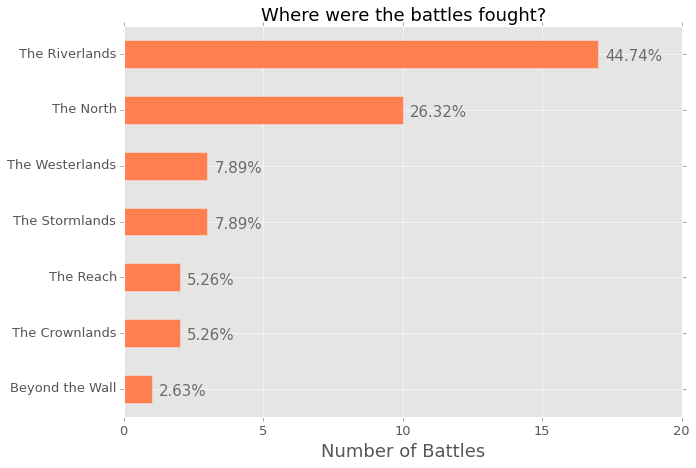
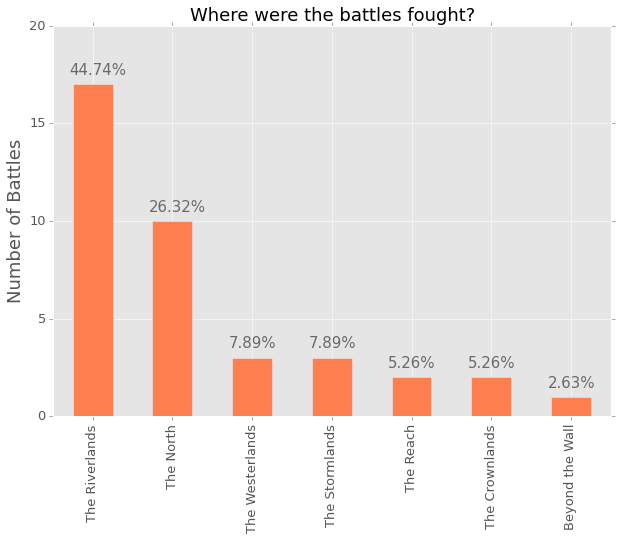
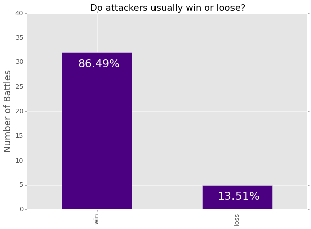
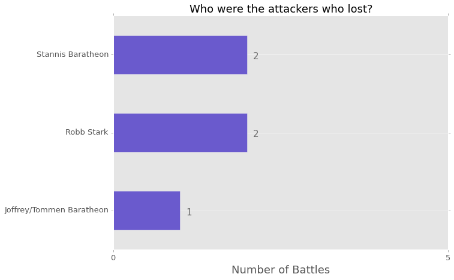
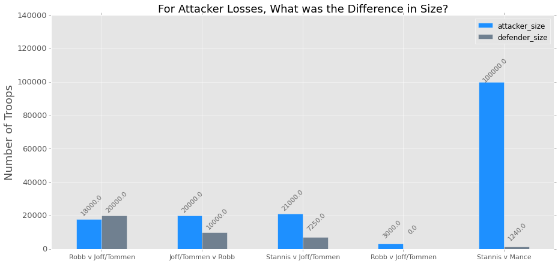
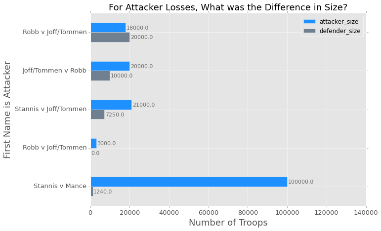

import numpy as np
import pandas as pd
import matplotlib.pyplot as plt
plt.style.use('ggplot')
%matplotlib inline
# set jupyter's max row display
pd.set_option('display.max_row', 1000)
# set jupyter's max column width to 50
pd.set_option('display.max_columns', 50)
# Load the dataset
data = pd.read_csv('site_content/data/5kings_battles_v1.csv')
Important
This is a very old post. The pandas API has matured greatly and most of this is very outdated. This remains here as a record for myself
When I first started using Pandas, I loved how much easier it was to stick a plot method on a DataFrame or Series to get a better sense of what was going on. However, I was not very impressed with what the plots looked like. Any time I wanted to do something slightly different from the “Plotting” documentation on the pydata site, I found myself arm deep in MPL code that did not make any damn sense to me. This was a problem for me, as I ended up spending way too much time trying to make small edits and not enough time working on the code I was trying to visualize.
One thing in particular bugged me. I could find no easy to understand tutorial on annotating a bar chart on StackOverflow or any other site. MPL had some documentation, but it was too confusing for me at the time. I spent a lot of time trying to figure out how to put some text right above my bars. Since I would have loved to see a snippet of code to help me in my journey, I thought I would throw it together in a brief post so others could use my workaround.
I warn you, it is not the most elegent solution, I am sure, but it worked for me when I needed to demonstrate the insight I had gained from a Healthcare Access and Utilization Survey (made up mostly of CHIS questions) to people in my department, my director, and her bosses. Since I cannot share any of that data, I will use the War of the Five Kings Dataset that Chris Albon made. I love this data set because I am in the middle of book five of Game of Thrones, which provides a good amount of domain familiarity to enable jumping in easier.
Setup + Import Data
First visualization with annotations
ax = data['region'].value_counts().plot(kind='barh', figsize=(10,7),
color="coral", fontsize=13);
ax.set_alpha(0.8)
ax.set_title("Where were the battles fought?", fontsize=18)
ax.set_xlabel("Number of Battles", fontsize=18);
ax.set_xticks([0, 5, 10, 15, 20])
# create a list to collect the plt.patches data
totals = []
# find the values and append to list
for i in ax.patches:
totals.append(i.get_width())
# set individual bar lables using above list
total = sum(totals)
# set individual bar lables using above list
for i in ax.patches:
# get_width pulls left or right; get_y pushes up or down
ax.text(i.get_width()+.3, i.get_y()+.38, \
str(round((i.get_width()/total)*100, 2))+'%', fontsize=15,
color='dimgrey')
# invert for largest on top
ax.invert_yaxis()
The image above is the output from the Jupyter notebook. I think it is super clear and gives a lot of information about where the battles were fought. However, I am very parital to horizontal bar charts, as I really think they are easier to read, however, I understand that a lot of people would rather see this chart implemented in a regular bar chart. So, here is the code to do that; you will notice that a few things have changed in order to create the annotation.
ax = data['region'].value_counts().plot(kind='bar', figsize=(10,7),
color="coral", fontsize=13);
ax.set_alpha(0.8)
ax.set_title("Where were the battles fought?", fontsize=18)
ax.set_ylabel("Number of Battles", fontsize=18);
ax.set_yticks([0, 5, 10, 15, 20])
# create a list to collect the plt.patches data
totals = []
# find the values and append to list
for i in ax.patches:
totals.append(i.get_height())
# set individual bar lables using above list
total = sum(totals)
# set individual bar lables using above list
for i in ax.patches:
# get_x pulls left or right; get_height pushes up or down
ax.text(i.get_x()-.03, i.get_height()+.5, \
str(round((i.get_height()/total)*100, 2))+'%', fontsize=15,
color='dimgrey')
I play around with the mpl.text() numbers for almost each chart. They are never exactly where they need to be, which often means moving thigs around a hair here and .03 there. You can add or subtract, which means you can also do this:
ax = data['attacker_outcome'].value_counts().plot(kind='bar', figsize=(10,7),
color="indigo", fontsize=13);
ax.set_alpha(0.8)
ax.set_title("Do attackers usually win or loose?", fontsize=18)
ax.set_ylabel("Number of Battles", fontsize=18);
ax.set_yticks([0, 5, 10, 15, 20, 25, 30, 35, 40])
# create a list to collect the plt.patches data
totals = []
# find the values and append to list
for i in ax.patches:
totals.append(i.get_height())
# set individual bar lables using above list
total = sum(totals)
# set individual bar lables using above list
for i in ax.patches:
# get_x pulls left or right; get_height pushes up or down
ax.text(i.get_x()+.12, i.get_height()-3, \
str(round((i.get_height()/total)*100, 2))+'%', fontsize=22,
color='white')
If you are like me, often you like to isolate a categorical value in one column and see what the rest of the dataframe looks like in light of that. It is a simply way of drilling down, but a percentage really would not be as appropriate as a count. Here is an example of using a count rather than a percentage:
losses = data[data['attacker_outcome'].str.contains("loss", na=False)]
ax = losses['attacker_king'].value_counts().plot(kind='barh', figsize=(10,7),
color="slateblue", fontsize=13);
ax.set_alpha(0.8)
ax.set_title("Who were the attackers who lost?", fontsize=18)
ax.set_xlabel("Number of Battles", fontsize=18);
ax.set_xticks([0, 5])
# set individual bar lables using above list
for i in ax.patches:
# get_width pulls left or right; get_y pushes up or down
ax.text(i.get_width()+.1, i.get_y()+.31, \
str(round((i.get_width()), 2)), fontsize=15, color='dimgrey')
# invert for largest on top
ax.invert_yaxis()
You can also just project a couple columns from those that lost to compare a couple of values; I think bar charts are great for this purpose. I am not sure what the best way would be do accomplish this, but here is my implementation:
ax = losses[['attacker_size', 'defender_size']].plot(kind='bar',
figsize=(15,7), color=['dodgerblue', 'slategray'], fontsize=13);
ax.set_alpha(0.8)
ax.set_title("For Attacker Losses, What was the Difference in Size?",
fontsize=18)
ax.set_ylabel("Number of Troops", fontsize=18);
ax.set_yticks([0, 20000, 40000, 60000, 80000, 100000, 120000, 140000])
ax.set_xticklabels(["Robb v Joff/Tommen", "Joff/Tommen v Robb",
"Stannis v Joff/Tommen", "Robb v Joff/Tommen",
"Stannis v Mance"], rotation=0, fontsize=11)
# set individual bar lables using above list
for i in ax.patches:
# get_x pulls left or right; get_height pushes up or down
ax.text(i.get_x()+.04, i.get_height()+12000, \
str(round((i.get_height()), 2)), fontsize=11, color='dimgrey',
rotation=45)
There is a handy ‘rotation’ option for the MPL plots that you can use that I feel works well when using a regular bar chart. I really dislike tilting my head to one side to try and read what it says! Also, it is easy to rename the columns! I did not realize how simple it was, which makes me feel silly.
Here is the chart done horizontally, which I prefer:
ax = losses[['attacker_size', 'defender_size']].plot(kind='barh',
figsize=(10,7), color=['dodgerblue', 'slategray'], fontsize=13);
ax.set_alpha(0.8)
ax.set_title("For Attacker Losses, What was the Difference in Size?",
fontsize=18)
ax.set_xlabel("Number of Troops", fontsize=18)
ax.set_ylabel("First Name is Attacker", fontsize=18)
ax.set_xticks([0, 20000, 40000, 60000, 80000, 100000, 120000, 140000])
ax.set_yticklabels(["Robb v Joff/Tommen", "Joff/Tommen v Robb",
"Stannis v Joff/Tommen", "Robb v Joff/Tommen",
"Stannis v Mance"])
# set individual bar lables using above list
for i in ax.patches:
# get_width pulls left or right; get_y pushes up or down
ax.text(i.get_width()+700, i.get_y()+.18, \
str(round((i.get_width()), 2)), fontsize=11, color='dimgrey')
# invert for largest on top
ax.invert_yaxis()
I hope this is helpful for anyone out there trying to create little annotations for their visualizations. I feel like this is just a little bit of extra work but it keeps me from having to write JavaScript, which is worth a little copy paste action. When I have time, I would like to create a class with methods so I do not have to keep doing a copy/paste job in my Jupyter notebook.
Let me know if there is an easier way to do this, I would be grateful!
Here is a link to the notebook on my GitHub if you are interested in playing with it a bit more. I stopped when I was trying to figure out how to turn the dates into a Pandas ‘period_range’.